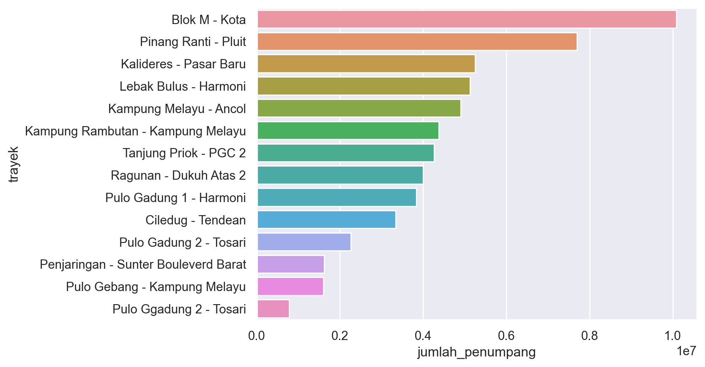
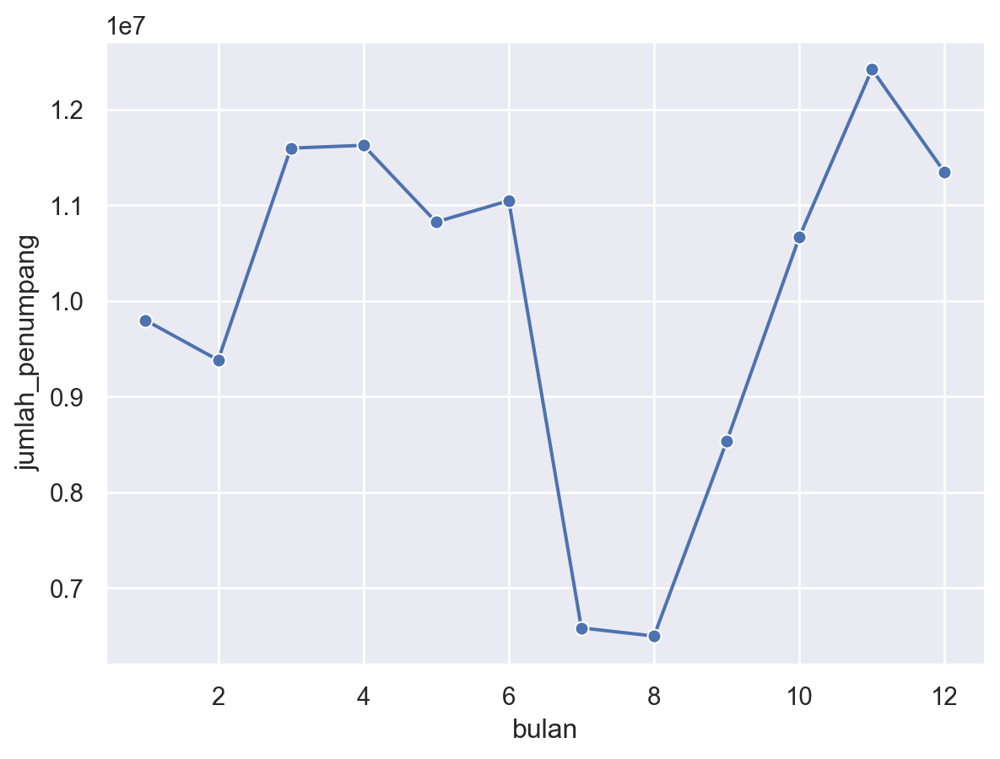

# Memuat library
import pandas as pd
import matplotlib.pyplot as plt
import seaborn as sns
import numpy as np# Memuat dataset bulanan
jan2021 = pd.read_csv("datasets/data-penumpang-bus-transjakarta-januari-2021.csv")
feb2021 = pd.read_csv("datasets/data-penumpang-bus-transjakarta-februari-2021.csv")
mar2021 = pd.read_csv("datasets/data-penumpang-bus-transjakarta-maret-2021.csv")
apr2021 = pd.read_csv("datasets/data-penumpang-bus-transjakarta-april-2021.csv")
mei2021 = pd.read_csv("datasets/data-penumpang-bus-transjakarta-mei-2021.csv")
jun2021 = pd.read_csv("datasets/data-penumpang-bus-transjakarta-juni-2021.csv")
jul2021 = pd.read_csv("datasets/data-penumpang-bus-transjakarta-juli-2021.csv")
agu2021 = pd.read_csv("datasets/data-penumpang-bus-transjakarta-agustus-2021.csv")
sep2021 = pd.read_csv("datasets/data-penumpang-bus-transjakarta-september-2021.csv")
okt2021 = pd.read_csv("datasets/data-penumpang-bus-transjakarta-oktober-2021.csv")
nov2021 = pd.read_csv("datasets/data-penumpang-bus-transjakarta-november-2021.csv")
des2021 = pd.read_csv("datasets/data-penumpang-bus-transjakarta-desember-2021.csv")# Menyatukan datasets bulanan
tj2021 = pd.concat([jan2021, feb2021, mar2021, apr2021, mei2021, jun2021, jul2021, agu2021, sep2021, okt2021, nov2021, des2021])
# Menampilan lima data atas tj2021
tj2021.head()| tahun | bulan | jenis | kode_trayek | trayek | jumlah_penumpang | |
|---|---|---|---|---|---|---|
| 0 | 2021 | 1 | Mikrotrans | JAK.88 | Terminal Tanjung Priok - Ancol Barat | 1473 |
| 1 | 2021 | 1 | Mikrotrans | JAK.85 | Bintara - Cipinang Indah | 20280 |
| 2 | 2021 | 1 | Mikrotrans | JAK.84 | Terminal Kampung Melayu - Kapin Raya | 28779 |
| 3 | 2021 | 1 | Mikrotrans | JAK.80 | Rawa Buaya - Rawa Kompeni | 54998 |
| 4 | 2021 | 1 | Mikrotrans | JA.77 | Tanjung Priok - Jembatan Item | 60284 |
# Menampilkan info tj2021
tj2021.info()<class 'pandas.core.frame.DataFrame'>
Int64Index: 1473 entries, 0 to 121
Data columns (total 6 columns):
# Column Non-Null Count Dtype
--- ------ -------------- -----
0 tahun 1473 non-null int64
1 bulan 1473 non-null int64
2 jenis 1473 non-null object
3 kode_trayek 1473 non-null object
4 trayek 1471 non-null object
5 jumlah_penumpang 1473 non-null int64
dtypes: int64(3), object(3)
memory usage: 80.6+ KBVisualisasi Data
# Menghitung jumlah penumpang per trayek per tahun
jumlahpertrayekthn = tj2021.groupby(['trayek', 'jenis'], as_index=False)["jumlah_penumpang"].sum()
# Menampilkan jumlah penumpang per trayek per tahun
jumlahpertrayekthn| trayek | jenis | jumlah_penumpang | |
|---|---|---|---|
| 0 | Andara - Stasiun Universitas Pancasila | Mikrotrans | 745812 |
| 1 | Batu Sari-Tanah Abang | Angkutan Umum Integrasi | 81314 |
| 2 | Bintara - Cipinang Indah | Mikrotrans | 334063 |
| 3 | Bintaro - Blok M | Angkutan Umum Integrasi | 188271 |
| 4 | Blok M - Andara | Mikrotrans | 725980 |
| ... | ... | ... | ... |
| 131 | Terminal Rawamangun - Cipinang Muara | Mikrotrans | 510100 |
| 132 | Terminal Tanah Merah - Pulo Gadung | Mikrotrans | 657001 |
| 133 | Terminal Tanjung Priok - Ancol Barat | Mikrotrans | 332037 |
| 134 | Tongtek - Cililitan | Mikrotrans | 1016797 |
| 135 | Ttanjung Priok - Plumpang | Mikrotrans | 118318 |
136 rows × 3 columns
# Mengambil data BRT Transjakarta per tahun
brtpertahun = jumlahpertrayekthn[jumlahpertrayekthn['jenis'] == 'BRT'].sort_values('jumlah_penumpang', ascending = False)
brtpertahun| trayek | jenis | jumlah_penumpang | |
|---|---|---|---|
| 5 | Blok M - Kota | BRT | 10079752 |
| 75 | Pinang Ranti - Pluit | BRT | 7694406 |
| 34 | Kalideres - Pasar Baru | BRT | 5250726 |
| 59 | Lebak Bulus - Harmoni | BRT | 5122397 |
| 37 | Kampung Melayu - Ancol | BRT | 4902814 |
| 46 | Kampung Rambutan - Kampung Melayu | BRT | 4372447 |
| 125 | Tanjung Priok - PGC 2 | BRT | 4262272 |
| 90 | Ragunan - Dukuh Atas 2 | BRT | 3996604 |
| 81 | Pulo Gadung 1 - Harmoni | BRT | 3836531 |
| 11 | Ciledug - Tendean | BRT | 3337261 |
| 82 | Pulo Gadung 2 - Tosari | BRT | 2256043 |
| 72 | Penjaringan - Sunter Bouleverd Barat | BRT | 1620307 |
| 83 | Pulo Gebang - Kampung Melayu | BRT | 1603385 |
| 86 | Pulo Ggadung 2 - Tosari | BRT | 776411 |
# Mengatur tema plot
sns.set()
# Mengatur ukuran plot
# fig, ax = plt.subplots(figsize=(11, 100))# Membuat plot
sns.barplot(data = brtpertahun, x="jumlah_penumpang", y="trayek")
# Menampilkan plot
plt.show()
monthlymean = tj2021.groupby("bulan", as_index=False)["jumlah_penumpang"].sum()
# Membuat plot
sns.lineplot(data=monthlymean, x='bulan', y='jumlah_penumpang', marker='o')
# Menampilkan plot
plt.show()